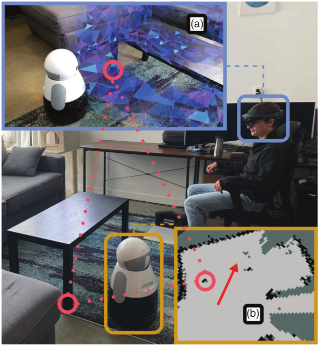
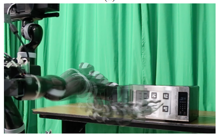
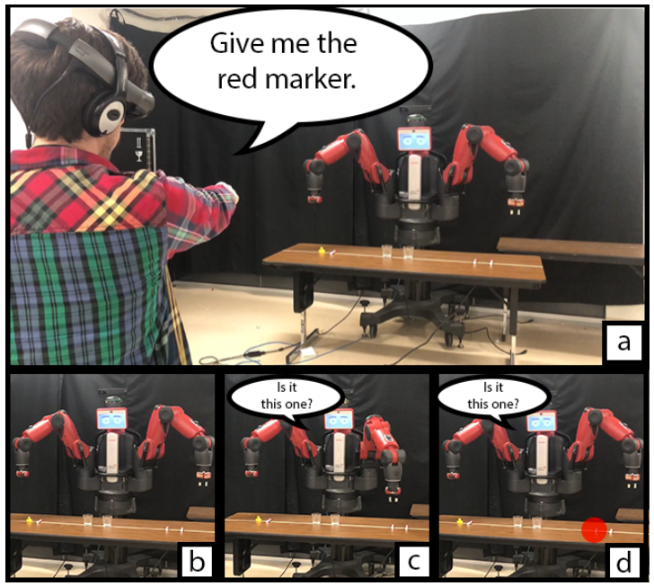
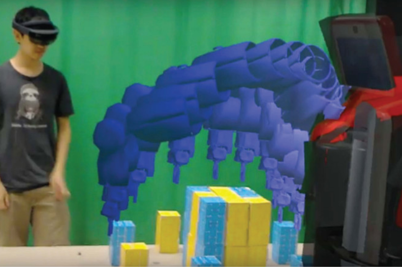

My research is motivated by the desire to have robots enter society and help/interact with people at large. My work has mostly focused on building effective algorithms and intuitive interfaces for robot learning, planning, and human-robot interaction. My PhD dissertation introduced methods for mobile manipulators to learn motor skills for manipulating objects, and symbols to support task planning, as well as mixed reality interfaces for enabling non-expert users to teach robots (You can watch my dissertation defense here).
Eric Rosen

eric.andrew.rosen@gmail.com


Home
Resume
Publications
Website made using the orderedlist/minimal theme
Welcome to my website!
I am currently a research scientist at Boston Dynamics AI Institue. I previously completed my PhD in Computer Science at Brown University, where I was co-advised by Stefanie Tellex and George Konidaris.
Interests
I enjoy playing (video and board) games, watching movies, and going to farmers markets. I also love juggling (balls, pins and rings) and slacklining, especially at the same time. I am also interested in STEM education, and enjoy making blogs/videos/interactive codebases about STEM-related concepts. I also like to eat/drink cold sweets (e.g: icecream, ICEEs, frozen lemonade), and also own a personal shaved-iced machine.
News
Here is what I have been up to recently:
- 2024: I was an Associate Editor for ICRA 2024 , where I helped handle papers related to AI-Enabled Robotics and Deep Learning in Grasping and Manipulation
- November 2023: I co-organized the CoRL 2023 Workshop: Learning Effective Abstractions for Planning (LEAP)
- October 2023: I guest lectured for CS1410: Introduction to Artificial Intelligence at Brown Unviersity on Hidden Markov Models
- June 2023: I started as a full-time Robotics Research Scientist at Boston Dynamics AI Institue.
- May 2023: I successfully defened my PhD dissertation: Abstraction for Autonomous Human-Robot Interaction
Featured Research
|  |
A Tool for Organizing Key Characteristics of Virtual, Augmented, and Mixed Reality for Human-Robot Interaction Systems: Synthesizing VAM-HRI Trends and Takeaways [pdf]
IEEE Robotics & Automation Magazine 2022
We created a tool for organizing key characteristics of VAM-HRI systems.
Joint work with Thomas R. Groechel, Michael E. Walker, Christine T. Chang, and Jessica Zosa Forde
|
|  |
We propose a method for learning in challenging dynamic object manipulation tasks.
Equally led with Ben Abbatematteo, joint work with Stefanie Tellex and George Konidaris
|
|  |
Mixed Reality as a Bidirectional Communication Interface for Human-Robot Interaction [pdf]
IROS 2020 Best HRI paper nominee
We propose a multimodal algorithm for bidirectional human-robot interaction with mixed reality.
Equally led with David Whitney and Michael Fishman, joint work with Daniel Ullman and Stefanie Tellex
|
|  |
Communicating and controlling robot arm motion intent through mixed-reality head-mounted displays [pdf]
IJRR 2019
We propose a mixed-reality visualization of the intended robot motion over the wearer's real-world view of the robot and its environment.
Equally led with David Whitney, joint work with Elizabeth Phillips, Gary Chien, James Tompkin, George Konidaris, and Stefanie Tellex
|